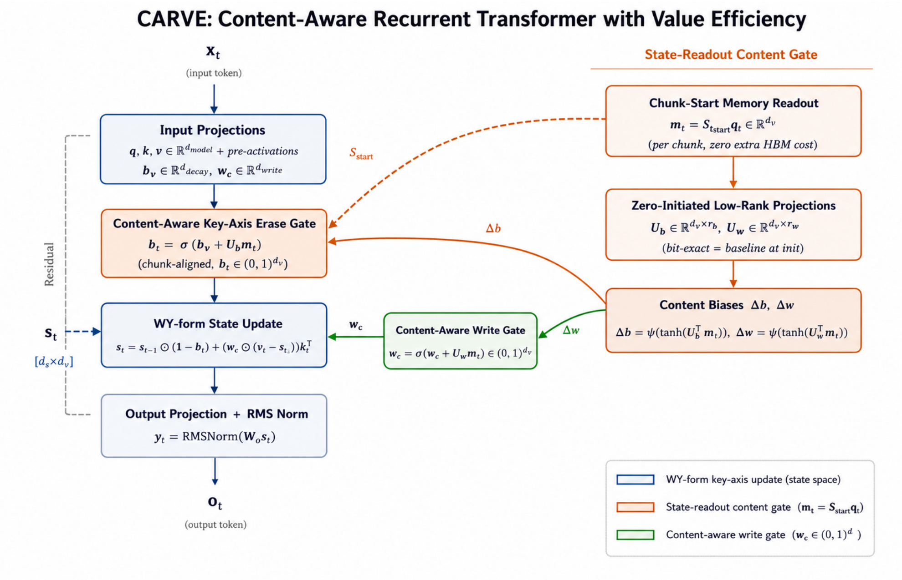
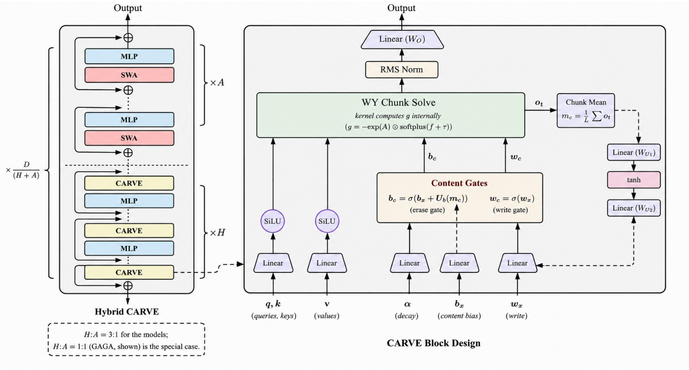
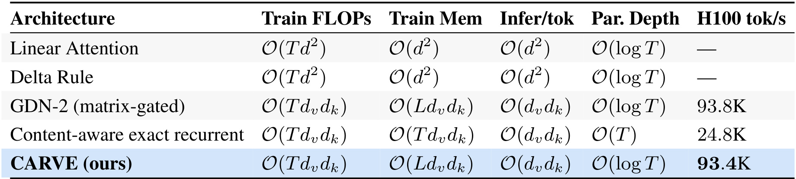
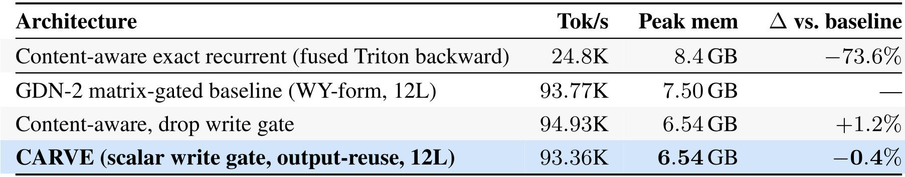
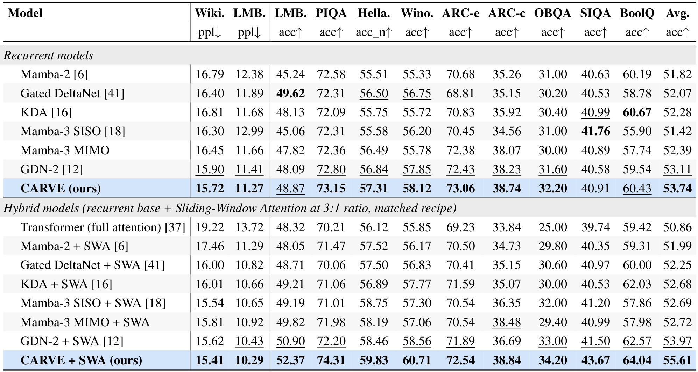
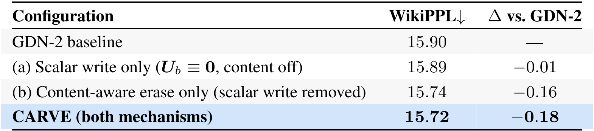
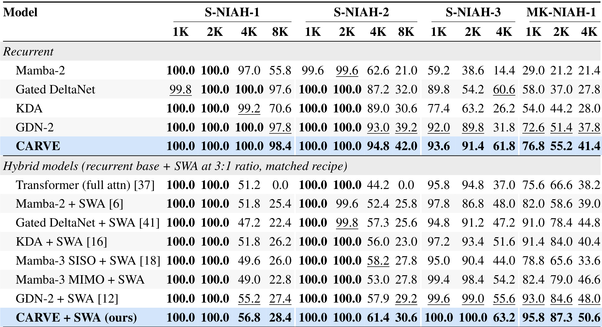
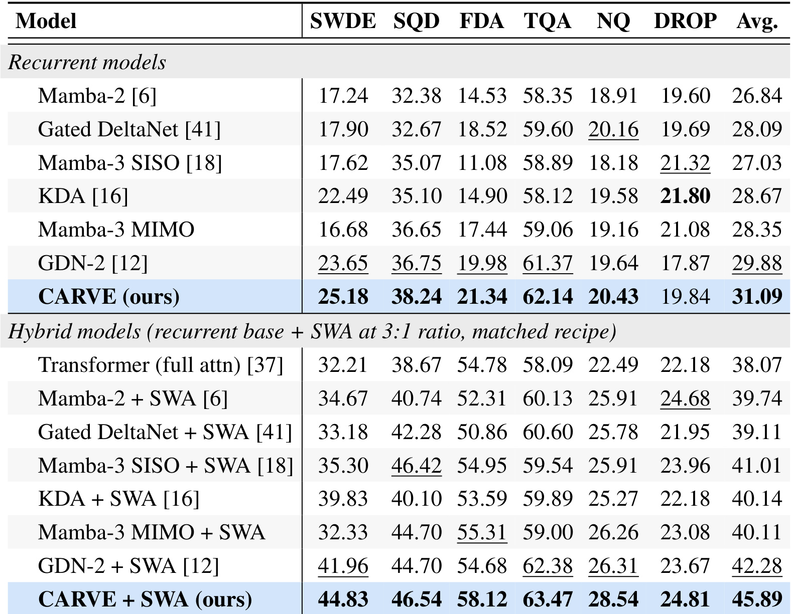

CARVE 这篇论文讨论的是 delta-rule 线性注意力家族里的一个底层架构问题：固定大小的递归状态矩阵怎样在保留训练并行性的同时，决定该忘掉哪些旧关联。论文入口为 arXiv:2606.27229，作者为 Sayak Dutta；PDF 和 arXiv 页面没有核验到独立代码仓库或项目页。本文把 CARVE 放在 GDN-2、KDA、Gated DeltaNet、Mamba/SSM 与滑窗注意力混合架构的背景下看，它的核心不是再提出一个更大的模型，而是给 gated delta recurrence 加上“看一眼已存记忆再决定 erase”的能力，同时保住 WY-form chunk-parallel 训练内核。
现有 GDN-2 这类矩阵门控 delta recurrence 虽然性能强，但 erase/write 门只看当前 token，无法观察状态矩阵里已经存了什么；完整 value-axis write/erase 又带来接近 value projection 的带宽与参数成本，并且 value-axis erase 会破坏 WY-form 三角 chunk 求解器，使高效训练退化为按 value channel 拆开的串行递归。
1. 背景和问题
长上下文模型的核心矛盾之一，是上下文到底以什么形式被保留。Transformer 的选择是把历史 token 近似完整保存在 KV cache 里，注意力可以按需回看任意位置，但训练和推理的 IO/计算成本都随序列长度增长。线性注意力和递归模型选择另一条路：把所有过去压缩进固定大小的状态矩阵 $S_t \in \mathbb{R}^{d_v \times d_k}$。这样推理时每个 token 的状态访问不再随上下文长度增长，但代价也很明确：状态矩阵容量有限，新 token 写入时必然会覆盖旧关联。于是问题从“能不能看全历史”转成“在固定状态里，应该保留什么、擦掉什么、怎样训练得足够快”。
Delta rule 给这个问题提供了一个很清楚的 associative memory 视角。它不是简单把 $v_t k_t^\top$ 加进状态，而是先用旧状态预测当前 key 对应的 value，再写入预测误差。这使状态更新更像在线修正一个键值记忆：如果旧状态已经能预测，就少写；如果旧状态错了，就按误差写入。Gated DeltaNet 和 GDN-2 继续在这个基础上加遗忘门，试图让模型更主动地清理旧关联。CARVE 直接继承这个谱系，因此它的目标不是替代 softmax attention 的所有能力，而是在固定状态、线性复杂度、chunk-parallel 训练这些约束里，把“遗忘”这件事做得更有信息。
GDN-2 的强处是 full matrix gate：erase gate 和 write gate 都是 $d_v \times d_k$ 的逐元素门。它看起来很灵活，但论文指出这里有三个结构性问题。第一，门控是 memory-blind 的，$B_t$ 和 $W_t$ 都由当前输入 token 的投影给出，模型必须在不知道 $S_{t-1}$ 里有什么的情况下决定擦除比例。这在语言里很反直觉：当一句话后面修正了前文事实，模型真正需要知道的是某个 key direction 里是否已经存了旧值。第二，write gate 的 value 维逐通道选择很贵，参数量和内存访问接近 value projection 本身，但作者用定理和消融说明，核心 associative recall 只需要每个 head 一个 scalar 写入强度。第三，也是最硬的限制，value-axis erase 让 chunk 内三角求解矩阵依赖 value index，原本一次共享的 WY-form solve 变成 $d_v$ 次独立 solve，吞吐优势被结构本身破坏。
CARVE 的切入点因此非常窄但关键：所有 erase 都限制在 key axis 上。这个限制表面上像削弱表达力，论文却把它证明成 chunkability 的必要充分条件。只要 erase 不沿 value axis 独立变化，chunk 内的 coupling matrix 就能对所有 value channel 共享，WY-form 三角 solve 才能保持一次性并行求解。换句话说，CARVE 不是先追求一个最复杂的门控形式再想办法优化内核，而是先固定“哪些门控形式还能被高效训练”这个边界，再在这个边界内加入内容感知 erase 和标量 write。
这篇论文和推荐、RAG、Agent 系统的关系在底层。很多上层系统需要长用户历史、长文档证据或多轮交互记忆，但直接把所有历史塞进 full attention 往往成本过高。CARVE 代表的是另一类可能性：用固定状态承载长期关联，用局部 attention 保留短程精确性，用内容感知门控降低状态污染。它的证据还停留在 1.3B 预训练模型、RULER 和 JRT 检索任务上，不能直接等同于线上推荐收益；但它回答的问题很基础，即固定状态模型怎样在“记得住”和“训得快”之间少牺牲一点。
2. 方法
2.1 从 GDN-2 更新式到 CARVE 的 key-axis 状态更新
先看 CARVE 要改的对象。Delta rule 的基本更新是本文所有门控改造的底座；它把线性注意力状态解释成一个在线键值记忆，并用 prediction error 写入新关联，因此后续讨论的 erase、write 和 chunk solve 都是在这个式子上加约束。
符号解释：$S_t$ 是 token $t$ 后的递归状态矩阵，$k_t$ 和 $v_t$ 是当前 token 的 key/value，$S_{t-1}k_t$ 是旧状态对当前 key 的 value 预测，括号里的差值就是 prediction error。这个式子的直觉是，模型不是盲目写入新 value，而是只把“旧记忆还没解释掉的部分”作为 rank-1 correction 写进状态。
符号解释：$B_t$ 是 erase mask，控制旧状态每个 entry 被擦掉多少；$W_t$ 是 write mask，控制误差更新每个 entry 写入多少；$\odot$ 是逐元素乘法。问题也正出在这里：$B_t$ 和 $W_t$ 的形状都覆盖 value 与 key 两个轴，表达力高，但 key/value 双轴耦合让 chunk solver 无法共享。
符号解释：$c$ 是 chunk index，$t$ 是 chunk 内位置；$g_{c,t}$ 是 key-axis decay gate，$b_{c,t}$ 是 key-axis content-aware erase gate，二者都通过右乘 diagonal matrix 作用在 key 轴；$w_{h,t}$ 是每个 head 一个的 scalar write gate，广播到所有 value channel。这个式子的关键是旧状态的衰减、擦除和新误差写入都不再需要 value-axis 独立门控，因此 chunk 内的递归关系仍能被一个共享三角系统求解。
2.2 内容感知 erase：用输出复用给门控一眼“旧记忆”
如果直接读取 $S_{t-1}$ 来做内容感知门控，HBM 访问会翻倍，递归模型的硬件优势就被吃掉。CARVE 的巧妙点是复用 kernel 已经必须写出的 recurrent output。每个 token 的输出近似是 $o_t=S_t q_t$，这个张量本来就会被写回硬件内存；CARVE 在 chunk 级别取上一 chunk 输出的均值作为内容信号：
符号解释：$L$ 是 chunk size，$m_c$ 是第 $c$ 个 chunk 用来调节门控的上一 chunk 均值输出。它不是精确的当前 token 状态读数，而是一种 one-chunk stale 的状态摘要。论文用 Proposition 14 说明这种滞后误差随 chunk averaging 缩小，不会线性累积。
符号解释：$b_{x,t}$ 是由当前 hidden state 投影得到的 token-driven erase bias；$U_b$ 是零初始化的低秩投影，把 $m_c$ 转到 key 维；$\sigma$ 是 sigmoid。零初始化很重要，因为训练开始时 $U_b=0$，CARVE 与 memory-blind baseline bit-exact，相当于只允许训练过程自己决定是否使用内容信号。随着 $W_{U2}$ 偏离零，erase gate 才逐渐把已存内容纳入决策。

Figure 1 把 CARVE 的层内数据流画得很紧。左侧输入投影产生 $q,k,v$，同时产生 decay logits、erase pre-activation 和 scalar write pre-activation；右上角的 Chunk-Start Memory Readout 从上一 chunk 的输出均值 $m_c$ 得到内容信号，再经过零初始化低秩投影产生 $\Delta b$ 和 $\Delta w$。图中最重要的连接是橙色虚线：内容门控不是从状态矩阵额外读一遍，而是沿着已经存在的输出路径回流到 erase gate。右侧 WY-form State Update 则显示 CARVE 仍然围绕 delta-rule prediction error 更新状态。读这张图时要注意，内容信号进入的是 key-axis erase，而不是 value-axis full matrix gate；这正是它能同时获得 memory awareness 和 chunk parallelism 的原因。
2.3 标量 write、fused decay 与 WY-form chunk solve
写入门控方面，CARVE 的选择更激进：每个 head 只保留一个 scalar write gate，并把它广播到 value 维。这样做把 GDN-2 里昂贵的 per-value write selectivity 变成一个全 head 的写入步长，质量解释交给消融和 Theorem 15，而硬件侧直接减少投影参数与内存流量。
符号解释：$\hat{w}_{h,t}$ 是 write pre-activation，$w_{h,t}$ 是 head 级写入强度，$\mathbf{1}_{d_v}$ 表示它会广播到所有 value channel。作者的定理说，在 single-slot associative recall 任务上，per-value routing 对核心能力不是必要条件；实验中的 Table 7 也显示 scalar write only 几乎不带来质量增益，主要价值是省掉参数和带宽。
符号解释：$A$ 是 learned log-decay amplitude，$f_{c,t}$ 是 decay logits，$\tau$ 是 bias，输出 $g_{c,t}\le 0$，因此 $\exp(g_{c,t})$ 是 key-axis retention factor。论文强调这一步在 Triton kernel 内部完成，避免额外写出一条 full-sequence BF16 activation tensor。
符号解释：$\gamma_t$ 只生活在 key 轴，因此它对每个 value row 都相同。进一步地，chunk 内三角系统的 coupling matrix 可以写成：
符号解释：$M_{ts}$ 表示位置 $s$ 的写入对位置 $t$ 的影响，$\gamma_{t-1}/\gamma_{s-1}$ 是从 $s$ 到 $t$ 的 key-axis retention。因为它不依赖 value index，所有 value channel 共享同一个 $M$，求解 $U=M^{-1}R$ 时只需一次 triangular solve。这就是 CARVE 方法章最核心的工程定理：key-axis erase 不是审美选择，而是保住单个 WY-form chunk solve 的结构条件。
符号解释：$\|\cdot\|_F$ 是 Frobenius norm，$M$ 是 bounded delta update 的上界，$b_{\min}$ 是最小 erase gate，$g_{\min}$ 是最大 post-activation decay factor。这个界说明 CARVE 的状态不会随长序列无界膨胀；erase 和 decay 是两条独立控制通路。论文进一步指出，content readout 的 one-chunk 误差满足：
符号解释：$b^{\mathrm{exact}}_{c,t}$ 是假设能读到精确当前状态时的门控，$\Delta o$ 是相邻 chunk 输出变化。这个式子解释了为什么 chunk size 增大不会简单放大误差；均值读出在弱相关输出下反而有 $1/\sqrt{L}$ 的平滑效应。
2.4 CARVE/SWA 混合：长程压缩记忆与局部精确注意力分工
单独的递归状态适合长期压缩，但它对最近 token 的精确位置和局部组合不如 softmax attention；单独的滑窗注意力有局部精度，却不能无限延展。因此 CARVE 设计了与 sliding-window attention 交错的 hybrid stack。论文在 1.3B/10B token 规模上搜索 CARVE:SWA 比例，报告 3:1 的 WikiPPL 最好：大多数层给 CARVE 用于长期关联，周期性插入 SWA 层刷新局部精确性。

Figure 2 左侧显示的是重复的 [(CARVE)$^H$ -> (SWA)$^A$] block，右侧则把 CARVE block 内部拆成 WY Chunk Solve、Content Gates、线性投影、RMS Norm 和输出残差路径。它和 Figure 1 的关系是：Figure 1 更关注单层数据流，Figure 2 更关注整网层级分工。对部署视角来说，左图说明 CARVE 并不要求所有层都放弃 attention；它可以只承担超过滑窗范围的长期状态。右图里的 gate-in-kernel fusion、chunk mean 和 content gates 则说明，这种长期状态不是简单累积，而是每个 chunk 都会用内容信号调 erase；这也解释了为什么论文把混合比例和块内部设计放在一起评估，而不是只报告一个孤立 recurrent layer。
3. 实验结果
3.1 复杂度、数值正确性与硬件吞吐
实验部分的顺序很值得注意。作者没有先给 perplexity，而是先问 fused kernel 是否正确、chunk solve 是否真的快、chunkability 边界是否在硬件上成立。这个顺序是合理的，因为 CARVE 的主张一半是模型质量，一半是“不破坏 WY-form 训练效率”。如果内核不 bit-exact、梯度不对，后面的 perplexity 提升就没有解释价值；如果内容感知必须退回 per-token exact recurrent，模型质量再好也不是同一个系统取舍。

Table 1 先把 CARVE 的位置放到复杂度表里。Linear Attention、Delta Rule、GDN-2 和 CARVE 都保留线性训练复杂度，但 Content-aware exact recurrent 的训练内存变成 $O(Td_vd_k)$，并行深度也变成 $O(T)$，这就是“精确读状态做内容门控”的代价。CARVE 行显示它仍是 $O(Td_vd_k)$ train FLOPs、$O(Ld_vd_k)$ train memory、$O(d_vd_k)$ infer/tok 和 $O(\log T)$ parallel depth，H100 tok/s 为 93.4K，和 GDN-2 的 93.8K 在同一量级。这张表证明 CARVE 没把内容感知换成更重的训练路径，而是把内容读出约束在 WY-form 能接受的结构里。
论文 Table 2 没有截图放进正文，但它报告 fused CARVE kernel 的 forward/backward 最坏相对误差都在 $10^{-7}$ 量级，CARVE 在 zero-init content projection 下和 GDN-2 baseline bit-exact。这条很关键：如果初始输出完全一致，后续质量差异就不能归因于实现偏差，而更可能来自训练中学到的内容门控。Table 4 也没有截图，但它支持同一逻辑：只做 content readout chunk-align 的相对偏差在 $L=16,32,64,128$ 上保持 $1.8\times 10^{-3}$，而试图消除 value-axis 依赖的其他变换要么偏差很大，要么 NaN。

Table 3 给出更直接的硬件结果。Content-aware exact recurrent 即使有 fused Triton backward，也只有 24.8K tok/s，峰值 8.4GB；GDN-2 matrix-gated baseline 是 93.77K tok/s、7.50GB；CARVE 是 93.36K tok/s、6.54GB。这里的解读不是“CARVE 比 GDN-2 更快”，因为 -0.4% 在作者表述中属于测量噪声；真正结论是 CARVE 在几乎同吞吐下少用约 13% 峰值显存，并减少 mixer 参数。这个结果和方法章一致：标量 write 省参数，key-axis erase 保 solver，输出复用避免额外 HBM 读；如果把内容感知做成精确逐 token 读状态，表中第一行已经显示吞吐会降到另一个量级。
3.2 语言建模与常识推理主结果
主结果在 1.3B 参数、100B token FineWeb-Edu 训练规模上比较，且所有 1.3B 模型共享训练 recipe。作者报告 WikiText、LAMBADA、PIQA、HellaSwag、Winogrande、ARC-e/c、OpenBookQA、SIQA、BoolQ 等指标，并分成 recurrent models 与 hybrid models 两块。这样的设置适合验证两个问题：纯 recurrent 版本的 content-aware erase 是否比 GDN-2 更好；加上 SWA 后，CARVE 是否仍能作为 hybrid backbone 带来增益。

Table 5 的核心结论有三层。第一，在 recurrent block 中，CARVE 的 WikiText perplexity 是 15.72，优于 GDN-2 的 15.90，也优于 Mamba-2、Gated DeltaNet、KDA、Mamba-3 等表中基线；平均准确率 CARVE 为 53.74，高于 GDN-2 的 53.11。第二，在 hybrid block 中，CARVE+SWA 的 WikiText perplexity 是 15.41，平均准确率 55.61，也高于 GDN-2+SWA 的 53.97。第三，CARVE+SWA 在 LAMBADA accuracy、PIQA、HellaSwag、Winogrande、OpenBookQA、SIQA、BoolQ 等多列上都处在表格前列。需要谨慎的是，这些是 1.3B/100B 的预训练和零样本评测，不代表更大模型一定线性放大；但在 matched recipe 下，它足以说明内容感知 erase 没有只改善一个单点指标。
Table 6 的三 seed 统计进一步给出置信度：CARVE recurrent 的 WikiPPL 是 $15.72\pm0.04$，GDN-2 recurrent 是 $15.90\pm0.04$；CARVE hybrid 是 $15.41\pm0.03$，GDN-2 hybrid 是 $15.62\pm0.03$。作者称 recurrent 的 -0.18 是 4.5σ effect。这个描述不应被夸大成“完全解决 recurrent 模型质量问题”，但它降低了一种疑虑：这不是单 seed 抖动或训练噪声造成的偶然差异。
3.3 机制归因：主要增益来自 content-aware erase
CARVE 有两个显性改动：content-aware key-axis erase 和 scalar write gate。如果只看最终模型，很难知道是“看见旧记忆”有用，还是“省参数/改写门”本身就能提升。Table 7 做了很直接的消融：冻结 $U_b\equiv0$ 表示关掉 content gate，只保留 scalar write；另一行启用 content-aware erase，但移除 scalar write gate。

Table 7 显示，GDN-2 baseline 的 WikiPPL 是 15.90；scalar write only 是 15.89，几乎没有变化；content-aware erase only 是 15.74，贡献了 -0.16；完整 CARVE 是 15.72。这个结果和论文叙事高度一致：scalar write 的价值主要是参数、内存和带宽效率，而不是质量增益；真正改善困惑度的是 erase gate 读到了状态相关内容。它也让 Theorem 15 的角色更清楚：标量 write 不是一个神奇的性能来源，而是说明 per-value write selectivity 对核心 associative recall 不是必要的，因此可以删掉昂贵通道而不伤害质量。
3.4 长上下文检索：RULER 与真实文档任务
如果内容感知 erase 的直觉成立，最应该改善的任务不是短句常识，而是长期状态里有多个关联互相干扰的检索。论文用 RULER 的 S-NIAH 和 MK-NIAH 做这个测试：S-NIAH 是单 needle，MK-NIAH 是 multi-key needle，后者更接近“状态里同时有多个 key-value 关联，需要别删错”的场景。

Table 8 很密，但趋势清楚。Recurrent 模型里，CARVE 在 S-NIAH-1 的 8K、S-NIAH-2 的 4K/8K、S-NIAH-3 的 1K/2K/4K、MK-NIAH-1 的 1K/2K/4K 多个位置都高于 GDN-2 或并列领先。例如 recurrent CARVE 在 MK-NIAH-1 的 1K/2K/4K 为 76.8/55.2/41.4，GDN-2 是 72.6/51.4/37.8。Hybrid block 中 CARVE+SWA 也在多数列领先，尤其 MK-NIAH-1 的 1K/2K/4K 到 95.8/87.3/50.6。这个表支撑的是“选择性擦除减少关联干扰”，而不是单纯“所有任务都更强”。
真实文档检索用 JRT benchmark suite，覆盖 SWDE、SQuAD、FDA、TriviaQA、Natural Questions、DROP。和 needle 任务不同，这里要从自然文本里抽取或回答信息，噪声更复杂，答案也不总是人工植入的字符串。

Table 9 中，recurrent CARVE 平均分是 31.09，高于 GDN-2 的 29.88；CARVE+SWA 平均分是 45.89，高于 GDN-2+SWA 的 42.28。单列看，CARVE recurrent 在 SWDE、SQuAD、FDA、TriviaQA、Natural Questions 上都高于 GDN-2，只在 DROP 上不是最高；hybrid 中 CARVE+SWA 在六个任务上全部领先。这个结果对 CARVE 很重要，因为它把内容感知 erase 的收益从合成 needle 扩展到自然文档抽取。不过也要看到，hybrid 的绝对提升很大一部分来自 SWA 层恢复局部精确 attention，不能把全部提升都归因到 CARVE state 本身；更公平的比较仍然是同一 block 内 CARVE 对 GDN-2 的差异。
综合这些实验，CARVE 的证据链比较完整：Table 1 和 Table 3 证明效率结构没有被破坏；Table 5 和 Table 6 证明质量提升不是孤立指标；Table 7 证明关键机制来自 content-aware erase；Table 8 和 Table 9 证明长期关联和真实检索场景确实更受益。它没有证明的部分同样明确：7B 或更大规模、指令微调、RAG/Agent 多轮工具调用、线上推荐 reranker 里的收益还没有数据。
4. 总结
CARVE 的价值在于把一个看似矛盾的目标拆开了：递归状态要想会选择性遗忘，就应该看见自己已经存了什么；但直接读状态又会破坏硬件效率。论文的回答是复用 recurrent output 的 chunk mean，用零初始化低秩投影给 erase gate 一条内容信号，同时把 erase 限制在 key axis，让 WY-form triangular solver 继续成立。这个设计的审美不在“更复杂的门”，而在门控表达力、内核可并行性、参数/带宽效率三者同时被结构性约束住。
从工程视角看，CARVE 更像一个值得跟踪的 recurrent/attention hybrid backbone，而不是可以直接搬到推荐链路的完整方案。它可能适合三类场景：第一，长上下文预训练或推理中，full attention 成本过高但完全丢掉长期记忆不可接受；第二，RAG 或用户记忆模块里，需要对长期事实进行压缩保留，同时保留局部窗口精确性；第三，多模态或视频场景中，后续帧会修正旧对象状态，选择性 key overwrite 很自然。对推荐系统来说，它的启发是底层记忆结构：用户长期兴趣、内容实体、会话内短期意图可以分别由固定状态和滑窗注意力承担，不必把所有历史都交给同一种 attention 机制。
局限也要分清。第一，content signal 来自上一 chunk 的输出均值，少于两个 chunk 的短序列没有可用内容信号，论文也承认这超出 Proposition 14 的典型假设。第二，评测集中在预训练和零样本任务，没有覆盖指令微调、偏好对齐、工具调用或多轮 Agent；content gate 在这些分布下是否稳定未知。第三，1.3B/100B token 的结论不能直接外推到 7B/1T，尤其 -0.18 perplexity 在更大规模上可能变大、变小或被训练噪声淹没。第四，论文没有核验到公开代码仓库，复现必须依赖作者后续释放 Triton kernel 或由读者重写 WY-form solve 与 backward scan。第五，RULER 和 JRT 证明的是检索类能力，不等价于开放式生成、事实一致性或线上业务指标。
后续我会优先关注三件事。第一，是否开源 kernel 和训练配置；CARVE 的主要难点不在公式，而在 fused Triton forward/backward 是否可稳定复现。第二，更大规模和指令模型结果；如果 content-aware erase 在 7B 以上仍能带来可测收益，它才更可能进入通用长上下文 backbone 讨论。第三，与 KV cache、SWA、RAG 记忆和推荐长期兴趣建模的组合方式；CARVE 解决的是压缩状态的选择性更新，不能单独替代外部检索或精确短期 attention，但它可能成为这些系统中更便宜的长期记忆层。